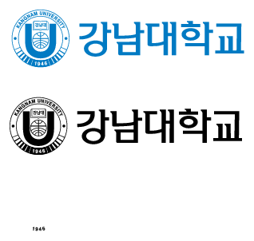

국제적 시야 확장
중국 자매대학과의 교류 및 현장교육을 통한 글로벌 역량 강화

참가 신청KANGNAM UNIVERSITY · GLOBAL PLUS
2026 WINTER PROGRAM
중국 린이대학에서 만나는 새로운 배움과 교류,
시니어 비즈니스의 현장을 경험하는 4박 5일
ABOUT THE PROGRAM
중국 자매대학인 린이대학과의 교류를 통해 국제적 시야를 넓히고, 한·중 학생 간 협력과 시니어 비즈니스 분야의 현장 이해를 높이는 프로그램입니다.
대학 간 교류를 넘어, 전공을 세계와 연결하는 경험을 만들어 갑니다.
중국 자매대학과의 교류 및 현장교육을 통한 글로벌 역량 강화
시니어 비즈니스 관련 우수시설 방문을 통한 산업 현장 이해
린이대학 학생들과의 공동 활동을 통한 교류 및 협력 경험
KEY EXPERIENCES
대학 교류부터 지역 문화 탐방, 전공 관련 현장 방문까지.
캠퍼스 투어, 도서 증정식 및 한·중 학생 조별 활동
왕희지 고거, 은작산한묘 죽간박물관, 린이박물관 등 방문
시니어 패션 비즈니스 관련 시설 방문 및 현장 이해
한·중 학생 간 아이디어 교류와 팀별 활동 수행
※ 세부 활동은 현지 및 운영 상황에 따라 변경될 수 있습니다.
5 DAYS, 4 NIGHTS
2026년 12월 18일(금)부터 12월 22일(화)까지
인천 출발 · 칭다오 도착 · 린이 이동 및 호텔 체크인
린이대학 방문, 캠퍼스 투어 및 한·중 학생 조별 활동
왕희지 고거, 은작산한묘 죽간박물관, 린이박물관, 랑야고성
시니어 패션 비즈니스 투어, 칭다오 맥주박물관 및 5·4광장
칭다오 출발 및 인천국제공항 도착
※ 항공편 및 세부 일정은 배포된 학생용 계획안을 확인해 주세요. 일정은 내부 사정에 따라 변경될 수 있습니다.
PARTICIPATION BENEFITS
글로벌 경험과 함께 제공되는 다양한 지원
ELIGIBILITY & SELECTION
초과학기생 및 휴학생은 지원할 수 없습니다. 전년도 참가자는 심사위원 판단에 따라 선발될 수 있습니다.
사전 교육 및 오리엔테이션 참여 · 조별 활동계획서 제출 · 현지 연수 전 일정 참여 · 개인 활동 결과보고서 및 조별 발표 자료 제출(각 심사 70점 이상) · 참인재시스템 만족도 조사 참여
HOW TO APPLY
안내 자료를 확인하고 지원서 작성 후 온라인으로 제출해 주세요.
지원서 및 활동계획서 등 작성
지원서 PDF 미리보기 ↗한글(HWP) 원본 다운로드 ↓※ HWP 원본의 파견기간 표기는 2025학년도 동계방학으로 남아 있습니다. 2026학년도 동계방학으로 수정 후 사용해 주세요. PDF 미리보기는 2026학년도로 수정했습니다.작성한 지원서 및 활동계획서, 참가자 서약서, 보호자 동의서, 개인정보 동의서 등 제출서류를 하나의 PDF 파일로 취합해 주세요. 재학증명서와 성적증명서 제출 시점은 담당 부서 안내를 확인해 주세요.
파일명 예시: 글로벌플러스_중국_학번_이름.pdf
CONTACT
프로그램 및 신청 관련 문의는 아래 담당 부서로 연락해 주세요.
문의처의 세부 이메일 및 연락처는 담당 부서 안내를 확인해 주세요.